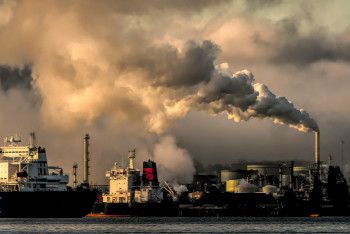
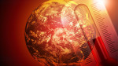

Mudanças Climáticas
As mudanças climáticas se referem a alterações significativas e duradouras nos padrões climáticos da Terra. Embora variações climáticas naturais ocorram ao longo de milhares de anos, o termo é geralmente associado ao impacto das atividades humanas, especialmente desde a Revolução Industrial. A principal causa é o aumento da emissão de gases de efeito estufa (GEE), como dióxido de carbono (CO₂) e metano (CH₄), provenientes da queima de combustíveis fósseis, desmatamento, agropecuária, e processos industriais.
Como as mudanças climáticas nos impactam
Ao longo dos anos, os impactos têm se tornado mais evidentes e intensos, afetando o meio ambiente, a economia e a sociedade
Aumento da temperatura global
O planeta já aqueceu cerca de 1,1°C desde os níveis pré-industriais, resultando em ondas de calor mais intensas e frequentes.
Elevação do nível do mar
O derretimento das calotas polares e geleiras tem causado o aumento do nível dos oceanos, ameaçando cidades costeiras.
Eventos climáticos extremos
Secas, tempestades, enchentes e furacões estão mais severos e imprevisíveis.
Impactos na biodiversidade
Muitas espécies enfrentam extinção devido à perda de habitat, alterações nos ecossistemas e mudanças nos ciclos naturais.
Consequências na saúde humana
Aumento de doenças respiratórias, doenças transmitidas por vetores, e problemas decorrentes de desastres naturais.
Impacto econômico
Agricultura, turismo e infraestrutura estão sofrendo prejuízos.
alterações climáticas no Brasil em cada Região
Norte
A Amazônia enfrenta desmatamento acelerado, aumento de queimadas e mudanças no regime de chuvas, comprometendo a biodiversidade e o ciclo hidrológico da região.
Nordeste
Intensificação das secas, avanço da desertificação e aumento de eventos extremos, como chuvas intensas e períodos de estiagem prolongados, afetando a agricultura e o abastecimento hídrico.
Centro-Oeste
Alterações no ciclo das chuvas têm prejudicado a produção agrícola e gerado maior risco de queimadas no Cerrado e no Pantanal.
Sudeste
Eventos extremos como enchentes e deslizamentos são cada vez mais comuns, além de períodos de seca que comprometem os reservatórios de água e o fornecimento de energia.
Sul
Aumento da frequência de ciclones extratropicais, granizo e ondas de frio atípicas, além de períodos de estiagem que afetam a produção agrícola.
Como podemos combater as mudanças climáticas
A luta contra as mudanças climáticas exige esforços individuais, mas principalmente coletivo e governamentais. Uma única pedrinha não consegue fazer muita coisa, mas 212.583.750 pedrinhas podem criar uma muralha indestrutível. Seja a mudança que você quer ter amanhã hoje!
Reduzir emissões de gases de efeito estufa
- Adotar energias renováveis, como solar e eólica
- Diminuir o uso de combustíveis fósseis e incentivar o transporte sustentável.
Preservar e recuperar ecossistemas naturais
- Combater o desmatamento e incentivar o reflorestamento
- Proteger áreas de conservação ambiental.
Adotar práticas sustentáveis
- Reduzir o desperdício de água e energia.
- Promover uma agricultura mais sustentável e de baixo impacto ambiental.
Educação e conscientização
- Sensibilizar a população sobre a importância do consumo consciente e da sustentabilidade.
- Envolver a sociedade em ações climáticas, como programas de reciclagem e plantio de árvores.
Cobrar ações governamentais
- Apoiar políticas públicas voltadas à mitigação e adaptação às mudanças climáticas.
- Cumprir os compromissos internacionais, como o Acordo de Paris.